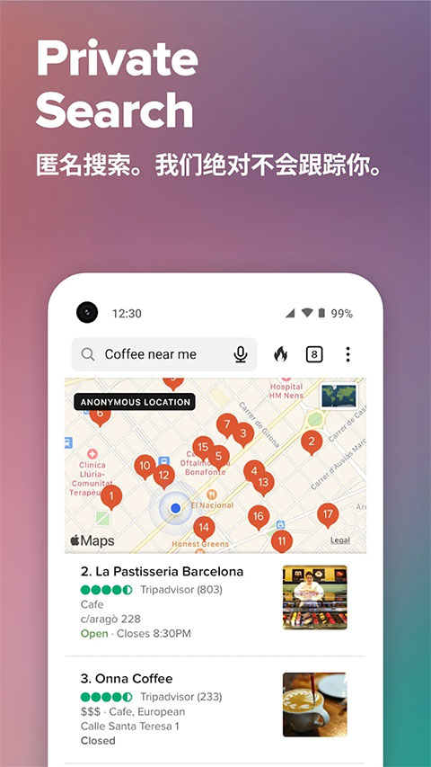

DuckDuckGo 到底值不值得从 Google 换过来？一个老用户的对比评测
从搜索引擎到浏览器再到密码管理，把 DuckDuckGo 放进隐私工具的坐标系里，聊聊它真正做得好的地方、妥协的地方，以及什么样的人该换、什么样的人不必动。
隐私工具这条赛道，它排第几
如果把"保护你不上网被跟踪"当成一个品类来看，目前大概分三档：系统自带的"无痕模式"——听起来隐私其实最裸；各大厂出的"隐私增强版"浏览器——功能堆得全但数据边界总让人不踏实；以及从成立第一天就把"不收集"写进基因的独立厂商。DuckDuckGo 是第三档里用户量最大、产品线最完整的那一家，它的官网对整套产品矩阵有清晰的展示。
我从 2019 年开始把默认搜索换成 DuckDuckGo，三年后又通过下载把主力浏览器也切了过去。中间试过 Brave、试过 Firefox 加一堆隐私插件，也有过"会不会太折腾"的动摇。这篇不是介绍文——介绍文在 duckduckgo.com文档 里已经写得很清楚了。我想聊的是：从日常使用体验出发，它在同类里到底处在什么位置、做对了什么、又在哪些地方不得不妥协。

三个别家没做好的差异化
从源头不收集，而不是"收集了但承诺不用"
很多隐私工具的思路是"我收集你的数据，但我不会卖给第三方"——这个承诺当然有价值，但它本质上是一个信任契约：你得相信这家公司不会被收购、不会被法院传票、不会改变政策。DuckDuckGo 的路线是结构性的：不收集，所以也没东西可卖、没东西可被传票要走。
这个差异听起来像口号，落到实处就是两种完全不同的产品设计。比如它的搜索引擎不保存搜索历史、不建立行为档案；它的浏览器没有账号体系、不要求你登录才能用完整功能；它的密码管理器把密钥和密文都存在你自己的设备上，服务器侧连一个密码库副本都没有。这些不是"功能开关"，是从架构层面就砍掉了数据收集这条路径。
对普通用户来说，这带来一个实际好处：你不需要理解复杂的隐私政策就能放心用。你不用去读几十页的条款找"哪些数据会被收集"，因为答案就是"不收集"。这个"不收集"的设计思路在它的 AI 聊天产品 Duck.ai 上延续了下来——你的提问经过它的服务器中转时，IP 等可识别信息被剥离，模型提供商看到的对话来自 DuckDuckGo 而不是你的设备，对话也不与任何身份档案绑定。
浏览器级的一站式防护，不需要你折腾插件
很多人对隐私防护的印象是"Chrome 加五六个插件"：一个拦跟踪器、一个拦广告、一个管理 Cookie、一个强制 HTTPS、一个指纹混淆……问题是，插件越多、插件之间的冲突概率越高、性能损耗也越大。我自己就遇到过同时装三个拦截插件导致某些站点加载失败，还得一个个排查是谁拦的。
DuckDuckGo 浏览器把十多项防护做进了底层：跟踪器在加载请求发出之前就被拦下（不是加载完再限制）、Cookie 弹窗自动替你点拒绝、HTTPS 强制加密覆盖大多数站点、火焰按钮一键关掉所有标签页并抹掉浏览数据。这些防护默认全开，你不用做任何配置就能享受完整的防护能力。
它的扩展生态确实远小于 Chrome，但反过来想——当浏览器本身已经把核心防护做全了，你还真需要那么多插件吗？ 我现在主力用它很少需要装额外扩展，偶尔遇到一个它没覆盖的小众功能，用浏览器自带的扩展支持补一个就够了。
无账号的密码管理：把安全模型简化到底
这一点我觉得是最容易被忽视的差异化。现在主流密码管理器几乎都要求你注册账号——账号本身就成了攻击面。如果密码管理器的服务器被攻破、或者你自己的账号被盗，后果不堪设想。
DuckDuckGo 浏览器内置的密码管理器走了另一条路：不需要任何账号。密码加密后只存在本机，解锁靠设备的生物识别（面容、指纹）或锁屏密码。跨设备同步靠端到端加密的同步备份，恢复码在你手里。这套安全模型的核心逻辑是：设备安全即密码库安全——你的电脑锁屏了，别人就打不开你的密码库，不管那家公司的服务器有没有出事。
它的功能也不含糊：强密码生成、信用卡与地址自动填充、从 Chrome 导入数据，该有的都有。我迁移的时候导出了 Chrome 的密码 CSV，导入后删掉明文文件，整个过程不到十分钟。
它的妥协：为"不收集"付出的代价
没有完美的工具。DuckDuckGo 在隐私上的坚持，是用几个实际问题换回来的。
搜索索引规模与 Google 有差距。 它的搜索结果来自自家爬虫和 Bing 等合作方的聚合，不是自己从零爬全网。这意味着某些非常冷门、非常新的内容，Google 能搜到它可能搜不到。日常用问题不大，但如果你做的内容需要精确命中，偶尔会遇到"搜不到想搜的东西"的情况。我自己的应对是：大多数日常查询用它，遇到搜不到的特定问题，切一个标签页去 Google 查一次——反正不是不能用 Google，只是不把它当默认。
扩展生态小。 Chrome Web Store 有几十万个扩展，DuckDuckGo 用的是 Firefox 的扩展体系（因为底层用的是 Gecko？不对，它现在四端都是独立内核），可用扩展数量差了一个数量级。如果你依赖某个小众的 Chrome 扩展（比如专门的开发者工具、特定的翻译插件），可能找不到替代品。我的建议是：主力用 DuckDuckGo，实在需要特定功能时用 Chrome 开一个窗口处理完就关。
部分站点拦截过严需要手动放行。 因为跟踪器拦截做得激进，偶尔会把某些站点的正常功能也拦了——比如有些网站的登录流程依赖第三方脚本、有些视频站点的播放器被当成跟踪器。遇到这种情况点一下地址栏的盾牌图标就能临时放行，不算麻烦，但确实偶尔会打断流畅的浏览体验。
选购结论：谁该换、谁不必动
说了这么多，总结下来其实很简单。
如果你符合下面任一条，值得试试： 在意自己的搜索历史被拿去做广告画像、正在从 Chrome 生态迁出但不想折腾插件组合、Android 上装的应用多想看到"谁在后台跟踪我"的明细、注册低频网站时不想暴露主邮箱。对你来说，DuckDuckGo 是一个"默认防护全开、不用费心配置"的省心选择。
如果你符合下面任一条，可以再等等： 依赖某款小众 Chrome 扩展且找不到替代、搜索是你工作的核心工具且需要最大索引覆盖、对浏览器的自定义能力有偏执要求。这些场景下它的短板会被放大，勉强换过来反而增加摩擦。
我的个人结论很明确：如果你在意隐私但又不想为此折腾，DuckDuckGo 是目前同类里最值得上手的选择。 它不是完美的，但它在"不收集数据"这个核心承诺上的结构性坚持，加上浏览器级的一站式防护，让它在同类里有了一个很难被替代的位置。